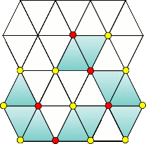

Chapter 6 黒い福音Dark Gospel
- 3感染リスク/Relapse
-
Information
- バイタル 70/75
- タイムリミット 5分
Process
- トリーティの処置
Guide
トリーティの基本的な攻略はギルス攻略：トリーティを参照。
トリーティが強化される。外見では色が判別できない状態になるので、毒素の色で判別して投薬していくことになる。
色が判別出来る状態と出来ない状態では移動速度が異なるので投与ミスに注意しよう。
Special Bonus
条件 スコア MAX CHAIN 【5/8/10】以上 900 【180/200/210】秒以上残して手術終了 800 毒憩室の発生個数が【6/3/1】個以下 300 Operation Rank
ランク スコア C ～6499 B 6500～6899 A 6900～7099 S 7100～7299 XS 7300～ for XS
この手術は条件にミスが含まれていないので、10CHAINさえ出せばXSが出るだろう。色の間違いにだけ注意すること。
Movie
- 4CALLING ME/Second Opinion
-
Information
- バイタル 50/99
- タイムリミット 5分
Process
- 裂傷を縫合
- キリアキ2匹+パラスケヴィ(1)が2匹出現
- パラスケヴィを全て処理すると新たにキリアキ3匹出現
- 初期のキリアキとパラスケヴィを処理するとパラスケヴィ(1)が2匹出現
- 全てのキリアキとパラスケヴィと裂傷を処理する
- マザー+キリアキ+パラスケヴィ(2)が2匹出現
Guide
キリアキの基本的な攻略はギルス攻略：キリアキを、パラスケヴィの基本的な攻略はギルス攻略：パラスケヴィを参照。
ここではキリアキとパラスケヴィを同時に相手する。
初期の裂傷を全て処置すると、キリアキ2体とパラスケヴィ2体が現れる。
パラスケヴィは捕まえられる大きさなので、捕まえてしまってもいいが、次のキリアキ3匹の出現条件がパラスケヴィ2匹の捕獲なので、同時に5匹も相手にしなくてはならなくなる。さすがにバイタルが持たなくなるのでこれは避けたい。
無事にキリアキとパラスケヴィを処理すると、今度はキリアキ3匹、パラスケヴィ2匹が現れる。
これも処理して全ての裂傷を処理するとマザー、キリアキ、パラスケヴィ2匹が現れる。このパラスケヴィは一度分割しなければ捕まえられない大きさのパラスケヴィである。
潜られるのはなんとしてでも避けなければいけないため、大裂傷を処理したら優先的にパラスケヴィを処理しよう。マザーはその後でゆっくり倒す。
Special Bonus
条件 スコア MAX CHAIN 【30/40/60】以上 500 Miss判定無し 800 【90/110/120】秒以上残して手術終了 400 Cool判定【15/20/30】回以上取得 300 Operation Rank
ランク スコア C ～10999 B 11000～11499 A 11500～11999 S 12000～12499 XS 12500～ for XS
少しスコアが足りなくなる可能性があるので、最後のキリアキマザーを泳がせて裂傷を縫合して稼ぐと確実だろう。
Movie
- 6ギルスと 未来と/The Future of GUILT
-
Information
- バイタル 90/99
- タイムリミット 5分
- レーザーの耐久度が無限
Process
- ペンプティの処置
Guide
ペンプティの基本的な攻略はギルス攻略：ペンプティを参照。
基本的には変わりないが、腫瘍ビットの耐久度が減った代わりに、腫瘍ビットを処置しきれないと、腫瘍ビットが残っているにも関わらず次のビットが出現してしまうので、腫瘍を放置してでも腫瘍ビットを最優先で除去すること。
Special Bonus
条件 スコア MAX CHAIN 【50/70/90】以上 600 【80/120/140】秒以上残して手術終了 800 Miss判定無し 600 Operation Rank
ランク スコア C ～5499 B 5500～5999 A 6000～6399 S 6400～6599 XS 6600～ for XS
腫瘍ビットの耐久力が少しだけ下がっているので前回よりは余裕なはず。スコアが足りなくなる可能性があるので裂傷ビットを放置して裂傷を縫合して稼ごう。
Movie
- 7英雄たちの屈辱/Fallen Heroes
-
Information
- バイタル 99/99
- タイムリミット 10分
Process
- 月森がテタルティを処理
- ミラがキリアキを処理
- 月森がデフテラを処理
- ミラがパラスケヴィを処理
Guide
シナリオモード最難関のステージ。集中力が試される。
二人が交互に手術するので超執刀が2回使える。苦手なギルスに使うのがよいだろう。オススメは、キリアキとデフテラ。
テタルティ
テタルティの基本的な攻略はギルス攻略：テタルティを参照。

赤い楔を全て抜けば、どの位置の膜を剥がしても増殖しない。
キリアキ
キリアキの基本的な攻略はギルス攻略：キリアキを参照。
子キリアキの耐久度が上がっていて、レーザーを3回当てなければいけない。
最初に2匹を処理する時、次の2匹の出現条件が、「全てのキリアキと裂傷を処理」ではなく、「全てのキリアキを処理」した瞬間に出現するので注意。
デフテラ
デフテラの基本的な攻略はギルス攻略：デフテラを参照。
2対のデフテラを除去して終了となるが、ランダムで血だまりが発生するようになっており、レーザーによる腫瘍の焼却やメスでの切除を妨げてしまうので、最優先で血だまりを処理する。融合時にこれに気づかないでメスを入れてて死ぬこともザラ。
この血だまりは対のデフテラが発生させていて、硬化後切除した状態でも血だまりを発生させる。硬化したデフテラを摘出して初めて血だまりが発生しなくなる。切除痕はそのままだとバイタルを減少させるので人口膜をかぶせておく。
一対でも処理できれば血だまり発生頻度が半分になるのでかなり楽になるだろう。
パラスケヴィ
パラスケヴィの基本的な攻略はギルス攻略：パラスケヴィを参照。
以前と違って一度でも潜られたら即ゲームオーバーである。
失敗するパターンとして多いのが、数が増えてきて処理能力を上回ってしまっていつの間にか潜られていた、だろう。
潜行する兆候
パラスケヴィは出現後か硬直から回復した後、一定時間後に尻尾が震えだす。3回尻尾が震えるとそのまま潜ってしまう。
例え3回目の振動でレーザーを当てても、次は再び一定時間後に3回震えてから潜ろうとするので、尻尾が震えたパラスケヴィに最優先でレーザーを当てていけば潜られることは無い。
処理しながらも、常に全体を見て震えているかどうか確認することが重要だ。
逆に言えば、一度レーザーを当てた個体は10秒近くは潜ろうとしないので、放置して他の個体に専念することができる。
いきなり実践で尻尾の振るえを見分けようとすると混乱するので、一度「5-6 カドゥケウス感染」で、一度も潜られずにクリアできるぐらいになるまで練習するとかなり楽になるだろう。
なお、ミラなので超執刀はヒーリングが発動するが、パラスケヴィ戦ではあまりバイタルが減らないのでここで使わずに、キリアキで使ってしまったほうがいいだろう。注射を打つ時間すら惜しいのなら話は別だが。
Special Bonus
条件 スコア MAX CHAIN 【80/130/150】以上 500 Miss判定無し 500 【120/180/200】秒以上残して手術終了 300 膜を【20/10/5】枚以上増殖させない 700 Operation Rank
ランク スコア C ～20999 B 21000～21999 A 22000～22999 S 23000～23999 XS 24000～ for XS
200秒が結構ネック。デフテラとパラスケヴィに手間取ると足りなくなる。最初のテタルティとキリアキで超執刀を使ってしまって時間を稼いでおこう。デフテラが不安な場合はテタルティを超執刀無しで安定してクリアできるようにしよう。
Movie
- 8医神の最期/Vulnerability
-
Information
- バイタル 90/99
- タイムリミット 10分
Process
- 巣の除去1回目（月森）
- 巣の除去2回目（ミラ）
- 巣の除去3回目（月森）
- コートの除去（月森）
- コートの除去（ミラ）
- コートの除去（月森）
- 新薬を打ち込む
- 自動で超執刀
- 超執刀を使う
- 新薬を打ち込む
Guide
サヴァトの基本的な攻略はギルス攻略：サヴァトを参照。
ラストステージ。基本的に以前のサヴァトと同じだが、患部移動前に処理をする必要がなくなっている。その代わり、糸が赤くなる速度や、熊手の頻度、コートの耐久力等が上昇している。
このエピソードに限り、最後の超執刀は月森が行うため、ミラが執刀している時のみ超執刀を使うことができる。
Special Bonus
条件 スコア MAX CHAIN 【80/150/180】以上 500 Miss判定無し 800 【90/120/150】秒以上残して手術終了 200 Cool判定【10/15/20】回以上取得 500 Operation Rank
ランク スコア C ～9999 B 10000～12999 A 13000～16999 S 17000～24999 XS 25000～ for XS
スコアが足りなくなる。自動超執刀後は処置するだけでバイタルが回復するので、サヴァトが作る裂傷群をひたすら縫合しよう。
Movie
- » Chapter Z